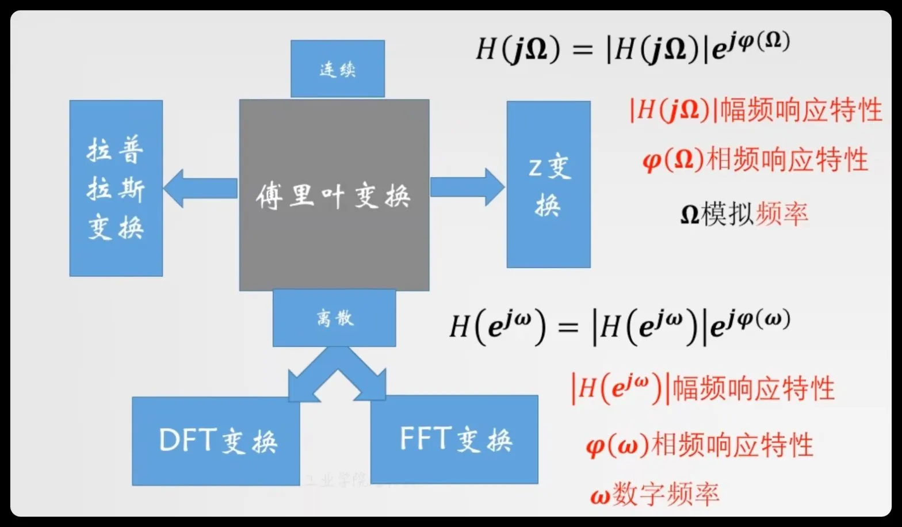
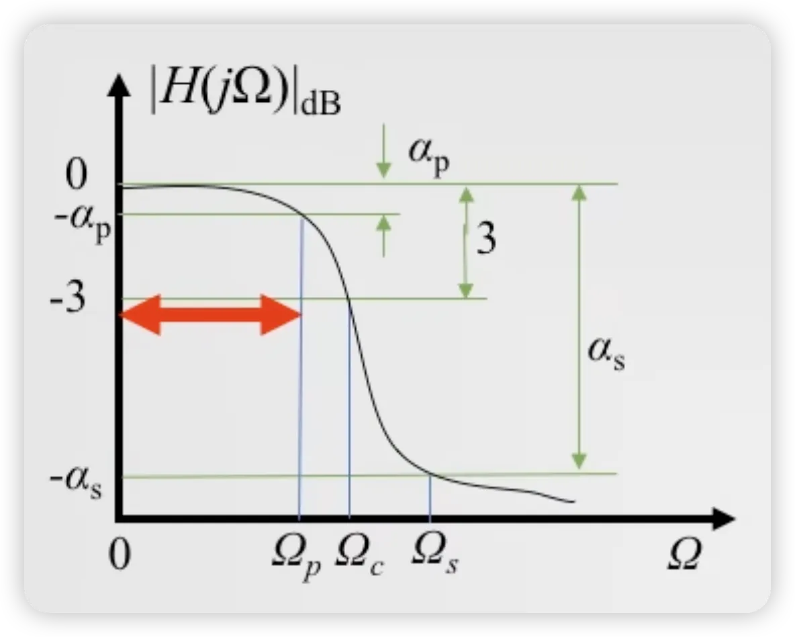
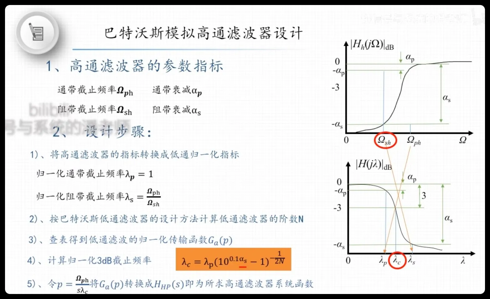
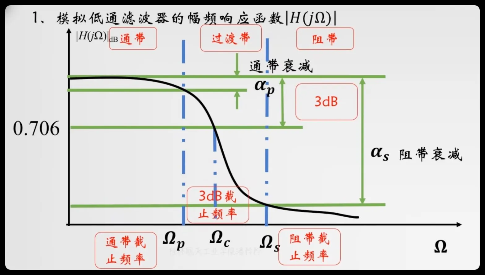
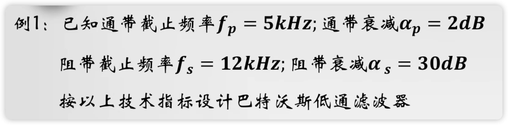
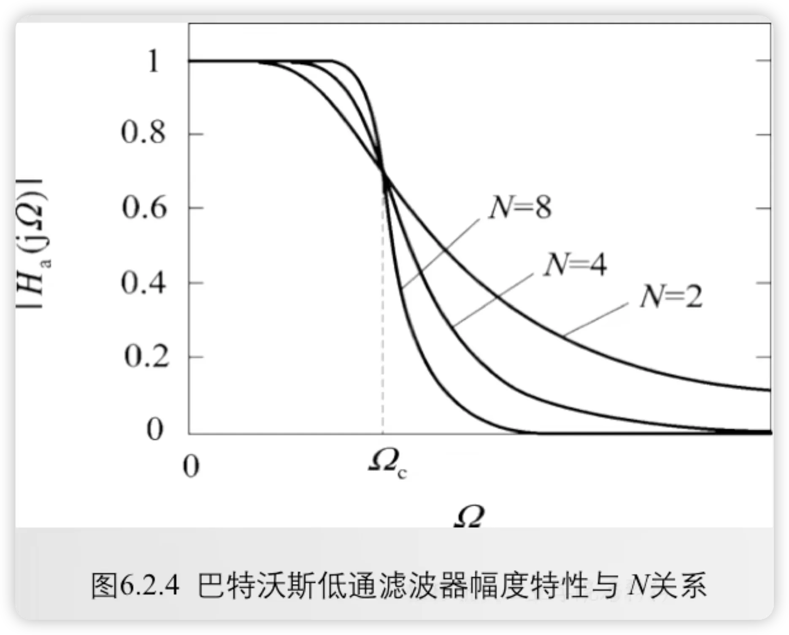
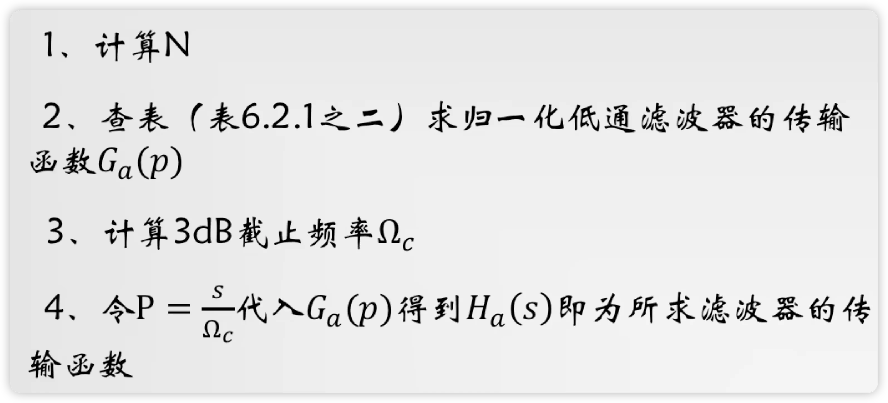

数字滤波器基础与分析
章前回顾:频域分析的工具链

这一章是前面所有 DSP 知识汇合的地方。章前用一张"族谱"把整条频域分析的工具链重新串起来:
第一层 - 变换族:怎么描述一个系统
- 傅里叶变换是根。它向两个方向分叉:
- 连续域 → 拉普拉斯变换(频点用 $j\Omega$,$\Omega$ 为模拟角频率)
- 离散域 → Z 变换(频点用 $e^{j\omega}$,$\omega$ 为数字角频率)
- 离散这一支再向下分出 DFT / FFT:前者是数学定义(有限长序列在离散频点上的频谱采样),后者是它的快速算法。
第二层 - 频率响应:怎么刻画系统的频域行为
- 连续系统的频率响应:$H(j\Omega)=|H(j\Omega)|\,e^{j\varphi(\Omega)}$,其中 $|H(j\Omega)|$ 是幅频响应,$\varphi(\Omega)$ 是相频响应。
- 离散系统的频率响应:$H(e^{j\omega})=|H(e^{j\omega})|\,e^{j\varphi(\omega)}$,其中 $|H(e^{j\omega})|$ 是幅频响应,$\varphi(\omega)$ 是相频响应。
- 两者在结构上完全平行,差别只在频点变量。
前置知识回顾
数字滤波器是前面所有 DSP 基础的汇合点。读这一节前,建议先把下面几条线串起来:
数字滤波器和模拟滤波器在功能上没有本质差别,目标都是保留某些频率成分、压制另一些频率成分。低通保留慢变化,高通强调快速变化,带通提取某个频带,带阻抑制某个频带。
区别在于实现方式。模拟滤波器由电阻、电容、电感或运放等硬件实现;数字滤波器由差分方程、系统函数和数值运算实现。一个 LTI 数字滤波器可以同时用三种方式描述:
- 差分方程:直接说明输入输出样本如何递推。
- 单位抽样响应:$h[n]$ 描述系统对 $\delta[n]$ 的响应,输出为 $y[n]=x[n]*h[n]$。
- 系统函数:$H(z)=Y(z)/X(z)$ 把时域递推变成复平面上的有理函数。
常系数差分方程的一般形式为
零初始条件下取 Z 变换,得到
这里用 Z 变换而不是直接用傅里叶变换,是因为 $H(z)$ 描述的是系统在整个复平面上的结构:分子给零点,分母给极点,收敛域还能进一步判断因果性和稳定性。傅里叶变换只看单位圆上的频率表现,即把 $z=e^{j\omega}$ 代入后得到的 $H(e^{j\omega})$。所以通常先用 Z 变换求系统函数,再从系统函数读出频率响应。
为什么专门看单位圆?因为 $z=re^{j\omega}$ 中,角度 $\omega$ 表示振荡频率,半径 $r$ 表示序列包络是否随时间指数增长或衰减。只有当 $r=1$ 时,输入 $e^{j\omega n}$ 才是幅度不变的纯频率分量。数字滤波器的"滤波效果"问的正是:输入某个频率的正弦或复指数后,输出被放大多少、相移多少。因此要看单位圆上的 $H(e^{j\omega})$,其中 $|H(e^{j\omega})|$ 是幅度响应,$\arg H(e^{j\omega})$ 是相位响应。
滤波器分析的核心就是读懂这个 $H(z)$:它的分子给零点,分母给极点;它在单位圆上的取值 $H(e^{j\omega})$ 就是频率响应。
FIR 与 IIR:有没有反馈,决定了系统性格
按单位抽样响应(impulse response)是否会无限延续,数字滤波器最常见地分为 FIR 和 IIR。这里的名字本身就说明了差别:
FIR / IIR 的英文全称
- FIR:Finite Impulse Response,有限长单位冲激响应滤波器。一个冲激输入进去,输出只响有限多拍,之后归零。
- IIR:Infinite Impulse Response,无限长单位冲激响应滤波器。一个冲激输入进去,由于系统内部有反馈,输出理论上会一直拖尾。
"单位冲激响应"可以理解成系统被敲一下之后的回声。FIR 像敲一下桌面:响几下就没了;IIR 像带回声的房间:声音会在内部反复反射,越来越小或者越来越大。这里的关键不是名字,而是有没有把过去的输出再喂回系统。
| 类型 | 英文 | 差分方程 | 系统函数 | 冲激响应 | 核心特征 |
|---|---|---|---|---|---|
| FIR | Finite Impulse Response | $y[n]=\sum_{m=0}^{M}b_m x[n-m]$ | $H(z)=\sum_{m=0}^{M}b_m z^{-m}$ | 有限长 | 无反馈,天然稳定,容易做线性相位 |
| IIR | Infinite Impulse Response | $y[n]=\sum_{m=0}^{M}b_mx[n-m]-\sum_{k=1}^{N}a_ky[n-k]$ | $H(z)=\frac{\sum_{m=0}^{M}b_mz^{-m}}{1+\sum_{k=1}^{N}a_kz^{-k}}$ | 通常无限长 | 有反馈,低阶高效,但稳定性由极点控制 |
FIR:只记住有限段过去输入
FIR 的输出只依赖当前和过去若干个输入样本,不依赖过去输出。例如二点滑动平均
对应的冲激响应只有两项:
这就是"有限长"的意思:冲激输入只让系统响两拍。因为没有反馈,系统不会自己把能量滚起来,所以 FIR 只要系数有限,就天然 BIBO 稳定。
IIR:把过去输出再反馈回来
IIR 的输出会依赖过去输出。最简单的一阶例子是
如果输入是一个单位冲激 $\delta[n]$,输出会变成
只要 $a\ne0$,这个序列理论上永远不会在有限时间后精确归零,所以叫 Infinite Impulse Response。它的好处是:用一个反馈系数就能形成很长的指数尾巴,因此低阶 IIR 就能做出较陡的频率选择性;风险是:如果反馈太强,也就是极点跑到单位圆外,尾巴会越滚越大,系统不稳定。
理想响应:完美矩形频响为什么不能直接实现
先把目标说清楚:所谓"理想低通",就是希望所有低频原封不动通过,所有高频完全砍掉。若截止频率是 $\omega_c$,理想幅频响应可以写成
这张图就是它的样子:中间一段完全平坦,两侧突然掉到 0。它在频域非常漂亮,但"突然掉下去"这件事,正是麻烦的来源。
为什么会这样?因为冲激响应 $h_d[n]$ 是频率响应 $H_d(e^{j\omega})$ 的反 DTFT:
当 $n\ne0$ 时,积分结果为
当 $n=0$ 时,极限值为 $h_d[0]=\omega_c/\pi$。如果用 sinc 函数 的写法,也常写成
这里的重点不是记住某个写法,而是看懂图像:它不是只在有限几个采样点非零,而是向左、向右都无限延伸,并且一边振荡一边慢慢衰减。
于是理想低通有两个实现障碍。第一,它的 $h_d[n]$ 对所有正负 $n$ 都可能非零,长度无限;真实滤波器不能存储和计算无限多个抽头。第二,它在 $n<0$ 的位置也有值,这意味着输出当前样本时需要用到"未来输入",所以通常是非因果的。
理想滤波器不是设计结果,而是逼近目标
课程里画理想低通,是为了说明"想要什么频率选择性",不是说真实系统可以直接实现这个矩形响应。
真正的 FIR/IIR 设计,就是在通带起伏、阻带衰减、过渡带宽、阶数和稳定性之间折中:允许边界不那么锋利,换来因果、稳定、有限复杂度的系统。
实际幅频响应:把"想要什么"翻译成"能接受什么"
理想低通是一张"完美账单"--低频 1、高频 0、过渡带为 0。但工程里永远做不出这种账单,只能给它一个容差区间,把"必须严格"换成"必须落在某条带子里"。这就是低通滤波器的实际幅频特性曲线:

横轴是数字角频率 $\omega$,从 $0$ 一直走到 $\pi$;纵轴是幅频响应 $|H(e^{j\omega})|$。曲线在三个频段里分别遵守不同的"规矩":
| 频段 | 频率范围 | 对 $|H|$ 的要求 | 容差项 | 工程含义 |
|---|---|---|---|---|
| 通带 | $0 \le \omega \le \omega_p$ | $1-\delta_1 \le |H(e^{j\omega})| \le 1+\delta_1$ | 通带纹波 $\delta_1$ | 希望信号几乎无失真地通过,允许小幅起伏 |
| 过渡带 | $\omega_p < \omega < \omega_{st}$ | 从 $1+\delta_1$ 单调下降到 $\delta_2$ | 过渡带宽 $\Delta\omega = \omega_{st}-\omega_p$ | 不可避免的"渐变区",越窄说明选择性越强 |
| 阻带 | $\omega_{st} \le \omega \le \pi$ | $|H(e^{j\omega})| \le \delta_2$ | 阻带纹波 $\delta_2$ | 希望噪声/干扰被压到几乎为零,允许极小残余 |
用对数刻度(dB)写更直观:
对绝大多数工程设计,$\delta_1,\delta_2\ll 1$,可以近似为 $A_p\approx 20\log_{10}(1+\delta_1)\approx 17.4\delta_1\,\text{dB}$,$A_s\approx -20\log_{10}\delta_2\,\text{dB}$。这两个 dB 值就是给设计方法(巴特沃斯、切比雪夫、椭圆、凯泽窗...)的目标输入。
四类基本滤波器:低通、高通、带通、带阻
四类基本滤波器可以先按"通带保留哪里、阻带压制哪里"来记。阅读时不要只记名字,而要盯住通带、阻带和过渡带的位置。
四种理想响应:四个矩形脉冲一张图
把四类基本滤波器放在一张图里看会更直观。四种理想滤波器的幅频响应本质上是四个不同位置摆放的矩形脉冲--只是 1 这条带子中心在 $\omega$ 轴上的位置不同:
四张图的区别只在"1 这条带子放在哪":
- 低通:矩形居中,$|\omega|<\omega_c$ 通过,其余阻断。
- 高通:矩形在两端,$|\omega|>\omega_c$ 通过,中间阻断。
- 带通:矩形在中段,$\omega_L<|\omega|<\omega_H$ 通过,两侧阻断。
- 带阻:矩形在两端与中央,$\omega_L<|\omega|<\omega_H$ 阻断,其余通过。
| 滤波器类型 | 通带保留 | 阻带压制 | 典型用途 |
|---|---|---|---|
| 低通 | 低频 | 高频 | 平滑、去高频噪声、抗混叠预滤波 |
| 高通 | 高频 | 低频 | 去直流、边缘/突变检测 |
| 带通 | 某一频段 | 频段外 | 提取载波、语音频段、谐振成分 |
| 带阻 | 除某一频段外 | 某一频段 | 陷波、去 50/60 Hz 工频干扰 |
实际设计时还要给出通带边界、阻带边界、通带起伏和阻带衰减。没有这些指标,就谈不上"设计",只能说是"想要某种大概效果"。
前一组回答了"滤波器如何表示"。接下来要回答的是"如何从这个表示判断它到底在滤什么"。关键入口不是盯着差分方程的外形猜,而是把系统函数放到单位圆上看。
零极点几何:系统函数如何决定滤波效果
把 $z$ 限制在单位圆上,令 $z=e^{j\omega}$,就得到频率响应。若系统函数写成
则单位圆上某一点 $e^{j\omega}$ 的响应大小可理解为:
这给出一个非常好用的几何直觉:单位圆上的频点离零点越近,响应越小;离极点越近,响应越大。零点负责"挖坑",极点负责"抬峰"。
直觉理解:极点像反馈回声的衰减因子
可以把一个因果 IIR 系统想成"输入激发一次,系统内部会一圈圈反馈回声"。一阶系统 $H(z)=1/(1-az^{-1})$ 的冲激响应是 $h[n]=a^n u[n]$:第一拍是 1,下一拍剩 $a$,再下一拍剩 $a^2$,之后是 $a^3,a^4,\ldots$。
如果 $|a|<1$,每绕一圈都乘上一个小于 1 的数,回声越来越小,尾巴虽然无限长,但总量有限,所以稳定;如果 $|a|>1$,每绕一圈都被放大,哪怕输入只有一个冲激,输出也会越滚越大,系统就不稳定。单位圆半径正好是"乘一次后不变大也不变小"的边界,所以极点必须落在单位圆内。
多极点系统也可以这样看:每个极点都对应一种指数模式。只要有一个极点在单位圆外,就有一种内部模式会放大;只有所有极点都在单位圆内,所有反馈模式才都会衰减。
四种基本滤波器的零极点分布
上一节的几何直觉可以反过来用:要构造某种选择性,就在单位圆上挑位置。
- 想保留哪个频段,就在相应角度的单位圆内靠近该频点处放极点(抬峰)。
- 想阻断哪个频段,就在相应角度的单位圆上或附近放零点(挖坑)。
- 极点必须严格落在单位圆内,否则系统不稳定;零点可以落在任何位置。
把图展开来读一遍:
- 低通:极点放在正实轴上的单位圆内(靠近原点),让 $\omega=0$ 附近的频点靠近极点而被放大;通常不配零点(实数系数的一阶 LPF 已经是典型形态)。
- 高通:在 $z=1$(即 $\omega=0$ 处)放零点挖掉低频,极点放在 $z=1$ 附近的单位圆内,把高频抬起来。
- 带通:在 $z=1$ 和 $z=-1$(即 $\omega=0$ 和 $\omega=\pi$ 处)放零点挖掉直流和最高频,极点作为共轭对放在某中心频率 $\pm\omega_c$ 附近的单位圆内,把中间的 $\omega_c$ 抬起来。
- 带阻:在想要阻断的频段位置($\pm\omega_L$ 和 $\pm\omega_H$,对称)放在单位圆上的零点挖坑,极点放在零点附近但严格在单位圆内,把坑挖尖但不破坏稳定性。
巴特沃斯（Butterworth）是最基础的模拟低通原型，核心特点是通带内最平坦（幅度函数在 $\Omega=0$ 处的前 $2N-1$ 阶导数全为零），代价是过渡带较宽、相同指标下阶数最高。下面按“定义 → 指标到参数 → 极点 → 系统函数”的顺序，把完整设计链路讲清楚。切比雪夫、椭圆、贝塞尔等原型见后续章节。
幅度平方函数
Butterworth 幅度平方函数
$N$ 为阶数,$\Omega_c$ 为 3 dB 截止频率($|H_a(j\Omega_c)|^2=1/2$)。无论 $N$ 多大,所有幅度曲线都精确穿过 $(\Omega_c,\,1/\sqrt{2})$ 点。
从指标到参数:$\lambda_{sp}$、$k_{sp}$ 与 $k_1$
设计题的标准输入是四个指标:通带边界 $\Omega_p$、阻带边界 $\Omega_s$、通带最大衰减 $\alpha_p$(dB)、阻带最小衰减 $\alpha_s$(dB)。但阶数公式不是直接用这四个原始量--需要先做两步归一化,把指标压缩成两个无量纲参数。
三个中间参数
频率归一化比(过渡带比):
它衡量过渡带有多宽:$\lambda_{sp}$ 越大(阻带边界离通带边界越远),对滤波器的要求越宽松,所需阶数越低。
选择参数:
$k_{sp}<1$,越接近 1 说明过渡带越窄、设计越难。
区分度参数:
它衡量衰减差有多悬殊:$\alpha_s$ 比 $\alpha_p$ 大得越多,$k_1$ 越小,说明阻带比通带压得深得多,需要更高阶数才能实现这种落差。
阶数公式
用中间参数表示,阶数公式极其简洁:
取不小于此值的最小整数。
分子 $\lg k_1<0$(因为 $k_1<1$)、分母 $\lg k_{sp}<0$(因为 $k_{sp}<1$),负负得正。等价写法:
推导逻辑(不是死记公式,而是理解它怎么来的):
- 在通带边界 $\Omega_p$ 处,要求 $|H_a(j\Omega_p)|^2\ge 10^{-0.1\alpha_p}$,代入幅度平方函数得 $\Omega_c^{2N}\ge\Omega_p^{2N}/(10^{0.1\alpha_p}-1)$。
- 在阻带边界 $\Omega_s$ 处,要求 $|H_a(j\Omega_s)|^2\le 10^{-0.1\alpha_s}$,代入得 $\Omega_c^{2N}\le\Omega_s^{2N}/(10^{0.1\alpha_s}-1)$。
- 两式联立,消去 $\Omega_c$,就得到阶数 $N$ 的下界。
截止频率 $\Omega_c$ 的确定
求出 $N$ 后(向上取整),$\Omega_c$ 不是唯一确定的--阶数取整后有余量。有两种口径:
- 通带精确(牺牲阻带余量):$\Omega_c=\Omega_p\bigl(10^{0.1\alpha_p}-1\bigr)^{-1/(2N)}$。保证通带恰好满足 $\alpha_p$,阻带会有富裕。
- 阻带精确(牺牲通带余量):$\Omega_c=\Omega_s\bigl(10^{0.1\alpha_s}-1\bigr)^{-1/(2N)}$。保证阻带恰好满足 $\alpha_s$,通带会有富裕。
工程上取两者之间的值都行,考试中通常按通带精确口径计算。
极点分布
把 $\Omega^2=-s^2$ 代入 $|H_a(j\Omega)|^2$ 得到 $H_a(s)H_a(-s)=1/[1+(s/j\Omega_c)^{2N}]$。令分母为零,解出 $2N$ 个极点均匀分布在半径 $\Omega_c$ 的圆上:
相邻极点角度间隔 $\pi/N$,$N$ 为奇数时实轴上有极点、$N$ 为偶数时没有。取左半平面的 $N$ 个极点构成因果稳定的 $H_a(s)$(右半平面的归给 $H_a(-s)$)。Butterworth 是全极点滤波器--分子为常数、无有限零点。
归一化系统函数与去归一化
实际计算时,工程上几乎总是走"归一化 → 查表 → 去归一化"的路线,而不是每次从头解极点方程:
- 归一化:取 $\Omega_c=1$,写出归一化低通系统函数 $H_{an}(s)=1/B_N(s)$,其中 $B_N(s)$ 是 $N$ 阶 Butterworth 多项式。前几阶可以直接查表:
| $N$ | $B_N(s)$(归一化分母多项式) |
|---|---|
| 1 | $s+1$ |
| 2 | $s^2+\sqrt{2}\,s+1$ |
| 3 | $s^3+2s^2+2s+1$ |
| 4 | $s^4+2.613\,s^3+3.414\,s^2+2.613\,s+1$ |
| 5 | $s^5+3.236\,s^4+5.236\,s^3+5.236\,s^2+3.236\,s+1$ |
| 6 | $s^6+3.864\,s^5+7.464\,s^4+9.141\,s^3+7.464\,s^2+3.864\,s+1$ |
- 去归一化:做频率代换 $s\to s/\Omega_c$(把截止频率从 1 搬到目标 $\Omega_c$),同时乘 $\Omega_c^N$ 保证增益归一:
完整设计流程速查
- 算中间参数:$\lambda_{sp}=\Omega_s/\Omega_p$,$k_1=\sqrt{(10^{0.1\alpha_p}-1)/(10^{0.1\alpha_s}-1)}$;
- 定阶数:$N\ge\lg k_1\,/\,\lg(1/\lambda_{sp})$,向上取整;
- 定截止频率:$\Omega_c=\Omega_p(10^{0.1\alpha_p}-1)^{-1/(2N)}$(通带精确口径);
- 查表:按 $N$ 查归一化多项式 $B_N(s)$;
- 去归一化:$H_a(s)=\Omega_c^N/B_N(s/\Omega_c)$,展开整理即得最终 $H_a(s)$。
这个流程也解释了为什么例题里"先算 N、次定 $\Omega_c$、再套 $B_N$"--每一步都对应上面设计流程的一个环节。
从低通到高通:频率变换法
前面讲的都是低通原型设计。如果目标滤波器是高通、带通或带阻,不需要从头来--只要把低通原型通过频率变换转换过去。这里先讲高通。

高通滤波器的指标用下标 $h$ 标记:通带截止 $\Omega_{ph}$、阻带截止 $\Omega_{sh}$、通带衰减 $\alpha_p$、阻带衰减 $\alpha_s$。注意高通的 $\Omega_{sh}<\Omega_{ph}$(阻带在低频侧)。
Butterworth 模拟高通设计五步
- 高通指标 → 低通归一化指标:令 $\lambda_p=1$,$\lambda_s=\Omega_{ph}/\Omega_{sh}$。因为 $\Omega_{ph}>\Omega_{sh}$,所以 $\lambda_s>1$--低通原型的阻带在右侧,这正好对应高通阻带在左侧的镜像翻转。
- 定阶数 $N$:用 Butterworth 低通阶数公式
$$N\ge\frac{\lg\big[(10^{0.1\alpha_s}-1)/(10^{0.1\alpha_p}-1)\big]}{2\lg\lambda_s}.$$
- 查表写归一化低通 $G_a(p)$:按 $N$ 查 $B_N(p)$ 表,$G_a(p)=1/B_N(p)$。
- 定归一化 3 dB 截止频率 $\lambda_c$:
$$\lambda_c=\lambda_p\bigl(10^{0.1\alpha_p}-1\bigr)^{-1/(2N)}=\bigl(10^{0.1\alpha_p}-1\bigr)^{-1/(2N)}.$$
(因为 $\lambda_p=1$。)
- 频率代换得高通 $H_{HP}(s)$:令
$$p=\frac{\Omega_{ph}}{s\,\lambda_c},$$
代入 $G_a(p)$ 得到高通系统函数:
$$H_{HP}(s)=G_a\!\left(\frac{\Omega_{ph}}{s\,\lambda_c}\right).$$
带通和带阻的设计思路完全类似--只是频率变换的代换式不同(带通用 $p=\frac{\Omega_0}{B}\left(\frac{s}{\Omega_0}+\frac{\Omega_0}{s}\right)$,带阻用 $p=\frac{\Omega_0}{B}\left(\frac{s}{\Omega_0}+\frac{\Omega_0}{s}\right)^{-1}$)。详细的频率变换公式表见 IIR 设计 · 数字频带变换法。
例题区
例题 4：双线性变换法设计一阶巴特沃斯低通数字滤波器
题目：用双线性变换法设计一个一阶巴特沃斯低通数字滤波器，要求通带最大衰减 $\alpha_p=3$ dB，通带截止频率 $f_p=200$ Hz，采样频率 $f_s=1$ kHz。画出结构流图。
已知：$\alpha_p=3$ dB，$f_p=200$ Hz，$f_s=1000$ Hz，$T=1/f_s=10^{-3}$ s，$N=1$。
- 数字截止频率：
$$\omega_p=\frac{2\pi f_p}{f_s}=\frac{2\pi\times 200}{1000}=0.4\pi$$
- 预畸变（双线性变换频率映射）：
$$\Omega_p=\frac{2}{T}\tan\frac{\omega_p}{2}=2000\tan(0.2\pi)\approx 2000\times 0.7265=1453.1\text{ rad/s}$$
- 定 $\Omega_c$：因为 $\alpha_p=3$ dB 恰好是巴特沃斯的 3 dB 截止点，所以 $\Omega_c=\Omega_p=1453.1$ rad/s。
- 写归一化原型 $B_1(p)=p+1$：
$$H_{an}(p)=\frac{1}{p+1}$$
- 去归一化（$p\to s/\Omega_c$）：
$$H_a(s)=\frac{\Omega_c}{s+\Omega_c}=\frac{1453.1}{s+1453.1}$$
- 双线性变换 $s=\dfrac{2}{T}\cdot\dfrac{1-z^{-1}}{1+z^{-1}}=2000\cdot\dfrac{1-z^{-1}}{1+z^{-1}}$：
$$\begin{aligned} H(z)&=\frac{1453.1}{2000\frac{1-z^{-1}}{1+z^{-1}}+1453.1}\\ &=\frac{1453.1(1+z^{-1})}{(2000+1453.1)+(1453.1-2000)z^{-1}}\\ &=\frac{1453.1(1+z^{-1})}{3453.1-546.9z^{-1}} \end{aligned}$$
- 归一化分母：
$$H(z)=\frac{0.4208(1+z^{-1})}{1-0.1584z^{-1}}=\frac{0.4208+0.4208z^{-1}}{1-0.1584z^{-1}}$$
差分方程：
结构流图（直接 I 型）：
$x[n]\to 0.4208\to\oplus\to y[n]$，同时 $x[n-1]\to 0.4208\to\oplus$，$y[n-1]\to 0.1584\to\oplus$。
即：输入 $x[n]$ 乘以 $0.4208$，前一次输入 $x[n-1]$ 乘以 $0.4208$，前一次输出 $y[n-1]$ 乘以 $0.1584$，三者相加得到 $y[n]$。
Chebyshev I 型幅度平方函数
$T_N(x)$ 为 $N$ 阶 Chebyshev 多项式,$\varepsilon$ 控制通带波纹幅度。
Chebyshev 多项式 $T_N(x)$
Chebyshev 多项式的递推定义为
其封闭形式为 $T_N(x)=\cos(N\arccos x)$(当 $|x|\le 1$ 时),在 $[-1,1]$ 上等幅振荡于 $\pm 1$ 之间;当 $|x|>1$ 时,$T_N(x)=\cosh(N\cosh^{-1}x)$,这解释了 Chebyshev 阶数公式为什么会出现反双曲余弦函数。
Chebyshev I 型的特点是:
- 通带内等波纹(波纹大小由 $\varepsilon$ 控制),阻带单调下降。
- 过渡带比 Butterworth 更陡,相同指标下阶数更低。
- 极点分布在左半平面的椭圆上(而非 Butterworth 的圆上)。
Chebyshev 阶数公式
与 Butterworth 的对数公式不同,Chebyshev 阶数公式涉及反双曲余弦函数,这是因为 Chebyshev 多项式在 $|x|>1$ 时表现为 $\cosh$ 形式。
Chebyshev II 型(逆 Chebyshev)则相反:阻带等波纹,通带单调。
| 原型 | 通带 | 阻带 | 过渡带 | 相位 |
|---|---|---|---|---|
| Butterworth | 最平坦 | 单调 | 最宽 | 较好 |
| Chebyshev I | 等波纹 | 单调 | 较陡 | 一般 |
| Chebyshev II | 单调 | 等波纹 | 较陡 | 一般 |
| 椭圆 | 等波纹 | 等波纹 | 最陡 | 最差 |
Chebyshev 概念后面要重点看通带内的等波纹形状:它不是 Butterworth 那种"尽量平",而是有意把误差均匀分摊到通带里,从而换来更陡的过渡带。课件用一页把两种型号的幅度特性并排画出:图 6-19 是 Chebyshev I 型(通带等波纹、阻带单调,画出 $N$ 为奇数与偶数两种情形,波纹 2 dB),图 6-20 是 Chebyshev II 型(通带单调、阻带等波纹)。对照 $1/\sqrt{1+\varepsilon^2}$、$1/A$ 这两条幅度参考线,可以一眼看出"波纹放在通带还是阻带"决定了 I 型与 II 型的区别--这是理解 Chebyshev 两型差异不可或缺的图页。
Chebyshev 的设计步骤围绕波纹参数 $\varepsilon$、多项式 $T_N(x)$ 和阶数公式展开;上文已经写出这些关键公式,因此这里作为公式出处和步骤对照。
常用模拟低通原型可以放在同一张对比表里理解:Butterworth 最平坦但过渡慢,Chebyshev 用波纹换过渡陡峭,椭圆滤波器过渡最快但相位代价最大。
这张表对应上面的原型对比表,也解释了为什么工程设计要在"阶数、过渡带、波纹、相位"之间取舍。
椭圆（Elliptic / Cauer）滤波器
椭圆滤波器也叫 Cauer 滤波器。它同时允许通带和阻带出现等波纹,因此在相同阶数下可以获得最窄的过渡带,也就是"最陡"的幅频下降。
Bessel 贝塞尔滤波器
Bessel 滤波器的核心目标不是最陡过渡,而是尽量平坦的群时延。它常用于更看重波形形状、瞬态响应和相位线性的场景。
| 原型 | 主要优点 | 主要代价 | 适合场景 |
|---|---|---|---|
| Butterworth | 通带最平坦 | 过渡带较宽 | 通用幅度逼近 |
| Chebyshev | 过渡更陡 | 存在通带或阻带波纹 | 阶数受限的选频设计 |
| Ellipse | 过渡最陡 | 相位非线性最明显 | 幅度指标最紧的设计 |
| Bessel | 群时延平坦、波形保真好 | 幅度选择性较弱 | 脉冲、音频、测量波形保真 |
设计流程:先定指标,再选 FIR/IIR,再谈实现
面对滤波器设计题,顺序不能反。不要一上来就问"用窗函数还是双线性变换",而是先把需求写成指标:
- 通带和阻带边界在哪里。
- 通带允许多大起伏。
- 阻带至少要衰减多少。
- 是否要求线性相位。
- 是否更关心低阶数、低延迟或数值稳定。
如果要求线性相位且可以接受较高阶数,FIR 常更合适;如果希望较低阶实现陡峭响应,IIR 常更高效。后续具体设计方法包括:窗函数法、频率采样法、Parks-McClellan FIR 设计、巴特沃斯/切比雪夫/椭圆 IIR 设计、双线性变换等。
例题区
例题:从实际公差带波形读出设计指标
原题:给出一张低通滤波器的公差带示意图(图见下),从图上读出通带截止频率 $\Omega_p$、阻带起始频率 $\Omega_s$、通带最大衰减 $\alpha_p$、阻带最小衰减 $\alpha_s$ 四个指标。

读图四步:
- 看纵轴 $\Omega=0$ 附近的曲线高度,记作 $1$(0 dB 参考);
- 看横轴上通带边缘位置 $\Omega_p$:这里曲线第一次越过 $-\alpha_p$ 线;
- 看横轴上阻带边缘位置 $\Omega_s$:这里曲线第一次低于 $-\alpha_s$;
- 中间的 $\Omega_c$ 是 3 dB 截止频率,是设计 $\Omega_p$ 与 $\Omega_s$ 之间的中间点。
读出来的 $(\Omega_p,\Omega_s,\alpha_p,\alpha_s)$ 就是后面对接巴特沃斯、切比雪夫、椭圆等设计方法的入口参数。
例题:巴特沃斯低通滤波器设计套路
原题:设计一个巴特沃斯低通滤波器,要求 $f_p=5\text{kHz}$、$\alpha_p=2\text{dB}$、$f_s=12\text{kHz}$、$\alpha_s=30\text{dB}$。求阶数 $N$、3 dB 截止频率 $\Omega_c$ 和系统函数 $H(s)$。



四步套路:
- 求阶数 N:由 $(\alpha_p,\alpha_s,\Omega_p,\Omega_s)$ 决定,
$$N=\left\lceil\frac{\log_{10}\!\sqrt{\dfrac{10^{0.1\alpha_s}-1}{10^{0.1\alpha_p}-1}}}{\log_{10}\!\dfrac{\Omega_s}{\Omega_p}}\right\rceil.$$
物理含义:分子是"阻带比通带多压了多少 dB",分母是"过渡带比十倍频多少",两者之比就是最少需要的阶数。
- 求 3 dB 截止频率 $\Omega_c$:用通带口径算出的较小者保证两侧都达标,
$$\Omega_c=\frac{\Omega_p}{\bigl(10^{0.1\alpha_p}-1\bigr)^{1/(2N)}}.$$
也可以用阻带口径算 $\Omega_c=\Omega_s/(10^{0.1\alpha_s}-1)^{1/(2N)}$,两者取较小的那个。
- 写出 $H(s)$:$H(s)$ 是 N 阶全极点低通,分子是 $\Omega_c^N$,分母是归一化巴特沃斯多项式左移 $\Omega_c$:
$$H(s)=\frac{\Omega_c^N}{B_N(s/\Omega_c)},\qquad B_N(s)=\prod_{k=1}^{N}\Bigl(s-e^{j\pi(2k+N-1)/(2N)}\Bigr).$$
$B_1(s)=s+1$,$B_2(s)=s^2+\sqrt2\,s+1$,$B_3(s)=s^3+2s^2+2s+1$,更高阶按规律递推。
- 转离散(若需数字域):用双线性变换
$$s=\frac{2}{T}\frac{1-z^{-1}}{1+z^{-1}}$$
把 $H(s)$ 变到 $H(z)$;注意这一步会频率非线性畸变,对截止频率要做预畸:$\Omega_c^\prime=\dfrac{2}{T}\tan\!\dfrac{\Omega_c T}{2}$。
例题 1:判断滤波器类型和系统函数
题目:给定差分方程 $y[n]=0.5x[n]+0.5x[n-1]$。判断它是 FIR 还是 IIR,并求 $H(z)$。
- 看是否含过去输出:右端只有输入项 $x[n]$、$x[n-1]$,没有 $y[n-k]$,所以没有反馈。
- 取 Z 变换:$Y(z)=0.5X(z)+0.5z^{-1}X(z)$。
- 求系统函数:
$$H(z)=\frac{Y(z)}{X(z)}=0.5(1+z^{-1}).$$
- 读频率响应:$H(e^{j\omega})=0.5(1+e^{-j\omega})=e^{-j\omega/2}\cos(\omega/2)$。
答案:这是二点滑动平均 FIR 滤波器,低频 $\omega=0$ 处增益为 1,高频 $\omega=\pi$ 处增益为 0,具有低通倾向。
例题 2:由极点判断 IIR 稳定性和滤波倾向
题目:系统满足 $y[n]-ay[n-1]=x[n]$,其中 $0<a<1$。判断类型、稳定性和频率倾向。
- 类型:方程含过去输出 $y[n-1]$,因此是 IIR。
- 系统函数:
$$H(z)=\frac{1}{1-az^{-1}}.$$
- 极点:极点在 $z=a$。因 $0<a<1$,极点在单位圆内;对因果系统而言,ROC 在最外极点之外并包含单位圆,所以系统稳定。这个逻辑见 Z 变换笔记中的 ROC 解释。
- 频率响应:
$$|H(e^{j\omega})|=\frac{1}{|1-ae^{-j\omega}|}.$$
当 $\omega=0$ 时分母为 $|1-a|$,当 $\omega=\pi$ 时分母为 $|1+a|$,所以低频增益更大。
答案:这是稳定的一阶 IIR 低通滤波器。
例题 3:FIR 梳状滤波器 $y[n]=x[n]+x[n-8]$
题目:由系统结构图写出差分方程,并求系统函数、单位抽样响应、频率响应和零极点分布。
解:
- 差分方程:输入一路直接到达加法器,另一路延迟 8 个样本后到达加法器,两路相加得输出:
$$y[n]=x[n]+x[n-8].$$
- 系统函数:两边取 Z 变换,利用移位性质:
$$Y(z)=X(z)+z^{-8}X(z)=(1+z^{-8})X(z), \quad\Rightarrow\quad H(z)=1+z^{-8}=\frac{z^8+1}{z^8}.$$
- 单位抽样响应:逆 Z 变换:
$$h[n]=\delta[n]+\delta[n-8].$$
这是长度为 9 的 FIR 冲激响应,只有 $n=0$ 和 $n=8$ 处为 1。
- 频率响应:令 $z=e^{j\omega}$:
$$H(e^{j\omega})=1+e^{-j8\omega}=e^{-j4\omega}\bigl(e^{j4\omega}+e^{-j4\omega}\bigr)=2\cos(4\omega)\,e^{-j4\omega}.$$
因此幅频响应为
$$|H(e^{j\omega})|=2|\cos(4\omega)|.$$ - 零极点:极点由 $z^8=0$ 给出,是原点处的 8 阶极点;零点由 $z^8+1=0$ 给出,即 $z^8=-1=e^{j\pi}$,故
$$z_k=e^{j(2k+1)\pi/8},\quad k=0,1,\ldots,7.$$
8 个零点均匀分布在单位圆上,角度为 $\pi/8,3\pi/8,5\pi/8,\ldots,15\pi/8$。
滤波特性:$|H(e^{j\omega})|=2|\cos(4\omega)|$ 在
前面的 DTFT、DFT、Z 变换都在为滤波器服务。DTFT 给频率响应,DFT/FFT 给计算工具,Z 变换给系统函数和稳定性判据。滤波器把这些工具合成一个工程对象:给定指标,构造一个可实现系统。
如果继续深入,下一步通常会分成两条线:FIR 设计重在窗函数、线性相位和频率采样;IIR 设计重在模拟原型、频率变换和双线性变换。
复习速查:数字滤波器做题入口
| 问题 | 入口 | 判断标准 | 常见误区 |
|---|---|---|---|
| FIR/IIR 判断 | 看差分方程是否含过去输出 | 无反馈为 FIR,有反馈通常为 IIR | 把有限阶差分方程误认为 FIR |
| 稳定性 | 看极点位置 | 因果 IIR 极点必须在单位圆内 | 只看零点不看极点 |
| 频率响应 | 令 $z=e^{j\omega}$ | 读 $|H(e^{j\omega})|$ 和相位 | 只看幅度忽略相位 |
| 低通/高通判断 | 比较 $\omega=0$ 与 $\omega=\pi$ | 低频大为低通,高频大为高通 | 凭差分方程外观猜 |
| 理想响应可实现性 | 看 $h[n]$ 是否因果有限/稳定 | 突变频响常对应无限非因果冲激响应 | 把理想响应当真实系统 |
| 设计选择 | 先列指标 | 线性相位偏 FIR,低阶陡峭偏 IIR | 先选算法再补需求 |
数字滤波器的概念
滤波器
数字滤波器是对输入离散时间序列 $x(n)$ 进行运算、得到输出序列 $y(n)$ 的离散时间系统。它的任务不是"凭空产生新信号",而是按照给定频率选择规则保留、削弱或改变信号中的某些频率分量:低通保留低频,高通保留高频,带通保留某个频带,带阻抑制某个频带。
系统函数
数字滤波器通常被看成线性时不变系统。若输入为 $x(n)$、输出为 $y(n)$,则系统函数定义为 $H(z)=Y(z)/X(z)$。当 $H(z)$ 写成 $z^{-1}$ 的有理分式时,分子系数 $b_k$ 对应输入延迟项,分母系数 $a_k$ 对应输出反馈项。
差分方程
从系统角度看,滤波器可以同时用三种语言描述:时域里的差分方程,$z$ 域里的系统函数 $H(z)$,以及工程实现里的结构图。差分方程告诉我们每一拍怎样递推;系统函数告诉我们零点、极点和频率响应;结构图则回答"这些加法器、乘法器、延迟器应该怎样连接"。
一个 $N$ 阶 IIR 滤波器的系统函数和差分方程分别为
分子实现零点(对 $x(n)$ 的加权延迟),分母实现极点(对 $y(n)$ 的加权延迟,即反馈)。结构设计的核心问题就是:如何用最少存储单元、最少乘法、最稳定的数值特性来实现同一 $H(z)$。
滤波器的功能与实现
无论滤波器多复杂,实现它所需的基本运算只有三种:加法、乘常数、单位延迟。
三种基本运算
| 运算 | 时域表示 | Z 域表示 | 在结构图中的角色 |
|---|---|---|---|
| 加法 | $y(n)=x_1(n)+x_2(n)$ | $Y(z)=X_1(z)+X_2(z)$ | 汇合节点,把多个支路输出相加 |
| 乘常数 | $y(n)=a\,x(n)$ | $Y(z)=a\,X(z)$ | 滤波器系数,决定每条支路权重 |
| 单位延迟 | $y(n)=x(n-1)$ | $Y(z)=z^{-1}X(z)$ | 存储一个采样周期,形成历史样本或状态 |
滤波器结构要比较什么?
- 存储量:需要多少个单位延迟器,也就是要保存多少个历史样本或状态。
- 运算量:每输出一个样本需要多少次乘法和加法。
- 数值稳定性:有限字长下,系数量化和舍入误差是否容易放大。
- 可调性:某个系数变化时,能否局部控制一对零点或极点。
- 并行性:不同支路能否同时计算,是否适合 FPGA、GPU 或多 MAC 单元 DSP。
结构表示法
实现滤波器必须回到系统框图与信号流图:方框图法从差分方程直接翻译,信号流图法更紧凑,便于结构推导与等价变换。详细的画法、三抽头示例、流图四要素与梅森公式见 离散时间系统的模拟与基本原理。
前一节回答了"实现滤波器需要哪些基本运算"。这一节回答"这些运算怎么组织起来"。同一个 $H(z)$ 可以对应许多不同结构--它们的频率响应完全相同,但延迟单元数、系数量化敏感度、内部状态动态范围和并行能力各不相同。
数字滤波器的结构按有没有反馈分成两大类:
IIR 结构(有反馈 / 递归型)
IIR 滤波器有极点,需要反馈支路。四种基本结构各有侧重:
- 直接 I 型:按差分方程原样画,零点网络 + 极点网络串联,延迟单元 $M+N$ 个。
- 直接 II 型(正准型):交换零极点网络顺序,合并共用延迟链,延迟单元降到 $\max(M,N)$ 个。
- 级联型:因式分解为二阶节(Biquad)串联,零极点独立可调,工程最常用。
- 并联型:部分分式展开为支路相加,误差不串行传递,适合并行硬件。
详见 IIR 数字滤波器的设计。
FIR 结构(无反馈 / 非递归型)
FIR 滤波器只有零点,没有极点(除 $z=0$),天然稳定。六种基本结构围绕不同优化目标展开:
- 横截型(直接型):直接用卷积和公式,每个抽头对应一个 $h(k)$。
- 转置横截型:转置定理变体,适合流水线实现。
- 级联型:因式分解为零点因子的乘积。
- 频率抽样型:梳状滤波器 + 谐振器组,改 $H(k)$ 即改频响。
- 线性相位型:利用 $h(n)$ 对称性,乘法次数减半。
- FFT 快速卷积:频域乘法代替时域卷积,长 FIR 时更高效。
详见 FIR 数字滤波器的设计。
同一个滤波器指标通常可以落到多种结构上。真正实现时,不是只问"哪个公式正确",而是问"这个平台上哪个结构更稳、更省、更容易调"。
| 选择维度 | 倾向 IIR | 倾向 FIR |
|---|---|---|
| 过渡带陡峭度 | 低阶即可很陡 | 需要高阶才能达到同样陡度 |
| 线性相位 | 难以保证(非线性相位) | 天然可实现严格线性相位 |
| 稳定性 | 极点受量化影响可能失稳 | 天然稳定(无反馈) |
| 延迟 | 低延迟 | 群延迟 = $(N-1)/2$ 个样本 |
| 结构选择 | 级联二阶节最常用 | 横截型 / 线性相位型 / FFT 卷积 |
数字滤波器除了有幅频特性,还有相频特性。如果相位响应不随频率线性变化,不同频率分量经过的延迟就不同,信号波形就会失真。这正是 FIR 滤波器不可替代的地方--它可以实现严格线性相位。
线性相位滤波器
若滤波器的频率响应可写成
且相位满足
则称该系统具有线性相位。其群延迟 $-\frac{d\theta}{d\omega}=\tau$ 为常数,意味着所有频率分量经历相同的时延,因此波形不会失真。
FIR 线性相位的充要条件
长度为 $N$ 的 FIR 滤波器单位冲激响应 $h[n]$ 若满足
则滤波器具有严格线性相位。
- 偶对称 $h[n]=h[N-1-n]$:纯线性相位,$\theta(\omega)=-\frac{N-1}{2}\omega$
- 奇对称 $h[n]=-h[N-1-n]$:线性相位加 $90°$ 固定相移,$\theta(\omega)=-\frac{N-1}{2}\omega+\frac{\pi}{2}$
无论哪种对称,群延迟都是常数 $\tau=\frac{N-1}{2}$ 个样本。
直观理解:FIR 的 $h[n]$ 只有有限个非零值,可以自由排列。只要让它关于中心对称,所有频率分量就会"等权"地经历相同的延迟,从而得到线性相位。IIR 滤波器因为存在反馈,$h[n]$ 无限长且受极点支配,无法关于某个中心对称,因此通常不能实现严格线性相位。
| 情况 | 对称性 | $N$ | 群延迟 | 频率响应特点 | 可设计类型 |
|---|---|---|---|---|---|
| I | $h[n]=h[N-1-n]$ | 奇 | $(N-1)/2$ | 纯线性相位 | 低通/高通/带通/带阻 |
| II | $h[n]=h[N-1-n]$ | 偶 | $(N-1)/2$ | $H(\pi)=0$ | 不能高通/带阻 |
| III | $h[n]=-h[N-1-n]$ | 奇 | $(N-1)/2$ | $H(0)=H(\pi)=0$ | 只能带通 |
| IV | $h[n]=-h[N-1-n]$ | 偶 | $(N-1)/2$ | $H(0)=0$ | 不能低通/带阻 |
复习速查
- 数字滤波器:对离散序列做频率选择的 LTI 系统,用差分方程、$H(z)$ 和结构图三种方式描述。
- FIR vs IIR:有没有反馈支路决定了系统性格--FIR 天然稳定、可做线性相位;IIR 低阶高效但极点控制稳定性。
- 线性相位:FIR 通过 $h[n]=\pm h[N-1-n]$ 实现严格线性相位,群延迟恒为 $(N-1)/2$;IIR 通常只能近似线性相位。
- 频率响应:令 $z=e^{j\omega}$,读 $|H(e^{j\omega})|$(幅度)和 $\arg H(e^{j\omega})$(相位)。
- 零极点几何:频点离零点近→响应小,离极点近→响应大;极点必须在单位圆内(因果稳定 IIR)。
- 理想响应不可实现:矩形频响对应无限长 sinc 冲激响应,非因果。
- 公差带:通带纹波 $\delta_1$、阻带纹波 $\delta_2$、过渡带宽 $\Delta\omega$--所有设计方法的输入指标。
- 巴特沃斯原型:$|H(j\Omega)|^2=1/(1+(\Omega/\Omega_c)^{2N})$,通带最平坦,过渡带最宽;设计四步:求 $N$→定 $\Omega_c$→写 $H(s)$→双线性变换。
- 结构实现:三种基本运算(加法、乘常数、单位延迟);IIR 四种结构(直接I/II、级联、并联)和 FIR 六种结构(横截、转置、级联、频率抽样、线性相位、FFT卷积)详见各自专题页。
参考来源
- 本地课程材料:《数字信号处理教程(第五版)》第 5-7 章。
- MIT OCW · Digital Signal Processing
- Stanford EE264 · Digital Signal Processing
- The Scientist and Engineer's Guide to DSP
- NI · Pole-Zero Plots for Digital Filters
- 教材:程佩青《数字信号处理教程》第 5 章
- Oppenheim & Schafer, Discrete-Time Signal Processing, Chap. 6